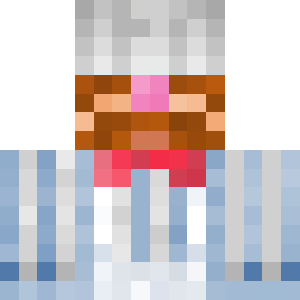

CIVITAS: RE-CREATED
Civitas: Re-Created var det mest populära och längst spelade modpacket i Civitashistorien. Med en tidsperiod som pågick mellan december 2023 till juli 2024 så utforskades det hur man effektivt kunde bygga upp en stor infrastruktur för passargerartrafik samt olika samhällen. Civitas: Re-Created är också det modpack med flest spelare någonsin, med ett rekord på X st i whitelistan.

DanteMinecraft
-
Elf_Oliver

Lulle2345
- 
SkogisAB
-
Zcloak
Spelare:

Forge

Fabric
Minecraft 1.20.1

Create 0.5.0+
Info:
 Civitas Re-Created
Civitas Re-Created
-
Re-Created | Survival
-
Re-Created | Byggvärld